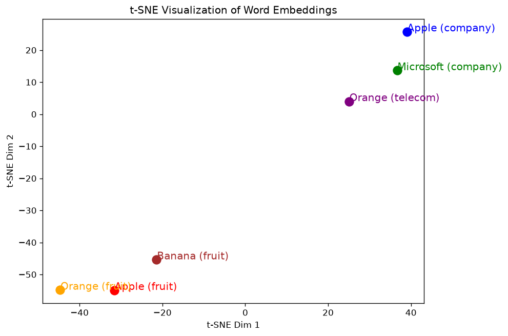
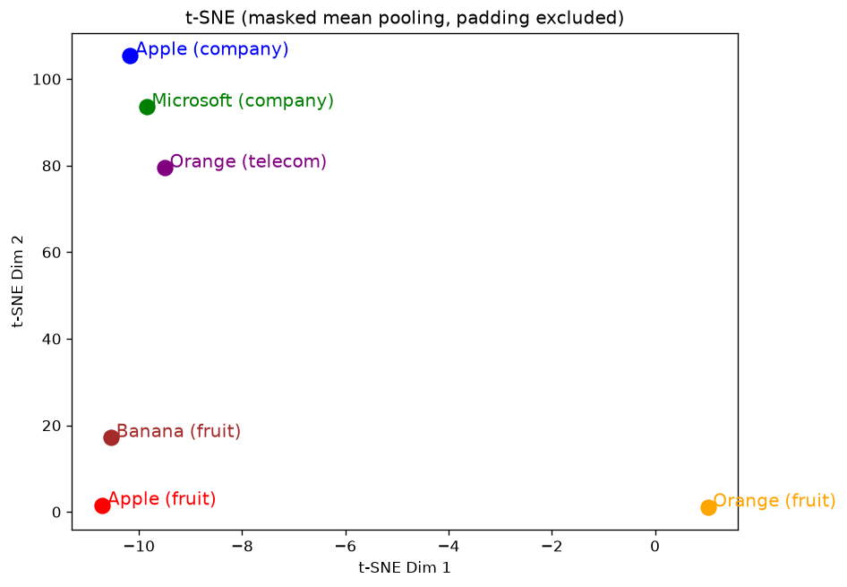

六句話補 pad 到 9 個 token，hidden_states[-1] 是 (6, 9, 2304)；沿 token 維度平均，pad 也被平均進去（R8）。pad 位置的向量不是零，也不是固定的：它平均地「看」整句，所以每句的 pad 向量都不同。不管含不含 pad，結論相同：Apple（水果）和 Apple（公司）的句子向量相似度 0.757，低於 Apple（公司）和 Microsoft 的 0.924。t-SNE 圖上可靠的是「誰最靠近誰」，座標與距離本身沒有意義。
- 本章對應的原始碼：hw3.py:256–294（
q5，沒有 TODO）。 - 本章的實測來自
logs/run_seed0.txt的 Q5 段與圖img/q5_tsne.png（hw3.py 的實際輸出），以及事實腳本docs/tools/hw03_facts.py的q5、pre_ch06段（logs/facts_q4_q7.txt、logs/facts_pre_ch06.txt）與它畫的實驗圖img/exp_q5_tsne_masked.png。log 在 repo 的docs/HW03/logs/，圖在docs/HW03/img/。 - R8 是全書大綱的問題對照表裡 repo 問題的編號；FACTS 是本機的事實清單
docs/HW03/FACTS.md。hidden_states的 27 個索引與範數見第 0 章 0.9 節，<pad>與其他特殊 token 見第 1 章 1.1.1 節。
6.1 這一題要做什麼
投影片 p.20 的題目是「Plotting the t-SNE 2-D Embeddings」，六句話寫在 sample code 裡。投影片右邊畫的是一張示意圖：「原本每一個 Token 都是獨立的符號」，經過模型之後「意思相近的 Token 會有接近的 Embedding」（run 與 jump 靠近、dog、cat、rabbit 靠近）。三小題都是選擇題：(1) 關於 t-SNE 的正確敘述（選 2 個）；(2) 關於這個實驗的正確敘述；(3) 關於這個實驗的錯誤敘述。敘述的選項不在投影片與 Colab 裡，本書不編；本章講清楚這個實驗實際算了什麼，並列出本機的數字，但不把它們寫成標準答案（理由見目錄頁第 1 節）。
這一題沒有 TODO 要填，程式整段是給好的：
def q5(tokenizer, model, args):
from sklearn.manifold import TSNE
######################## (Q5.2 ~ 5.3) ########################
sentences = [
"I ate a fresh apple.", # Apple (fruit)
"Apple released the new iPhone.", # Apple (company)
"I peeled an orange and ate it.", # Orange (fruit)
"The Orange network has great coverage.", # Orange (telecom)
"Microsoft announced a new update.", # Microsoft (company)
"Banana is my favorite fruit.", # Banana (fruit)
]
inputs = tokenizer(sentences, return_tensors="pt", padding=True, truncation=True).to(DEVICE)
with torch.no_grad():
outputs = model(**inputs, output_hidden_states=True)六句話成對設計：Apple 有水果與公司兩個意思，Orange 有水果與電信公司（法國的 Orange 電信）兩個意思，再加上一家公司（Microsoft）和一種水果（Banana）當參照。實驗想看的是：同一個字在不同語境下，模型給的表示會不會跟著語境走。
和原版 Colab 第 26 格（第 25 格是「## Q5: t-SNE」標題）比，hw3.py 拿掉了原版開頭的 model.to(device)（模型早就在 GPU 上）與重複的 import，plt.show() 改成 save_fig("q5_tsne.png")，平均之後多了一個 .float()（6.3 節）。其他程式逐行相同（註解有幾處改寫，例如 :274）。這一題沒有旗標（第 0 章旗標表），本機跑一次 0.5 s（第 0 章 0.10 節）。
6.2 一個 batch 裝六句話：左邊補 pad
:269 把六句話的 list 一次交給 tokenizer。句子長短不同，但 tensor 必須是方的，所以 padding=True 讓 tokenizer 把短句補到和最長的一樣長。補的是 <pad>（id 0），而且 Gemma 的 tokenizer 設定 padding_side='left'，補在左邊（第 1 章的 tokenizer 資訊）。本機實際的結果（logs/facts_q4_q7.txt q5 段）：
| 句子 | 真實 token | pad | 9 個位置 |
|---|---|---|---|
| Apple (fruit) | 7 | 2 | <pad> <pad> <bos> I ▁ate ▁a ▁fresh ▁apple . |
| Apple (company) | 7 | 2 | <pad> <pad> <bos> Apple ▁released ▁the ▁new ▁iPhone . |
| Orange (fruit) | 9 | 0 | <bos> I ▁peeled ▁an ▁orange ▁and ▁ate ▁it . |
| Orange (telecom) | 8 | 1 | <pad> <bos> The ▁Orange ▁network ▁has ▁great ▁coverage . |
| Microsoft (company) | 7 | 2 | <pad> <pad> <bos> Microsoft ▁announced ▁a ▁new ▁update . |
| Banana (fruit) | 7 | 2 | <pad> <pad> <bos> Banana ▁is ▁my ▁favorite ▁fruit . |
最長的是 Orange (fruit) 的 9 個 token（含 <bos>），所以 input_ids 是 (6, 9)，各句補 2、2、0、1、2、2 個 pad。注意第 0 句是小寫的 ▁apple（句中、前面有空白），第 1 句是句首的 Apple：依第 3 章，這兩個本來就是不同的 token，id 也不同。
tokenizer 同時回傳 attention_mask，pad 的位置是 0、真實 token 是 1（logs/facts_pre_ch06.txt 第 7 行）：
attention_mask rows: [[0, 0, 1, 1, 1, 1, 1, 1, 1], [0, 0, 1, 1, 1, 1, 1, 1, 1], [1, 1, 1, 1, 1, 1, 1, 1, 1], [0, 1, 1, 1, 1, 1, 1, 1, 1], [0, 0, 1, 1, 1, 1, 1, 1, 1], [0, 0, 1, 1, 1, 1, 1, 1, 1]]
:271 的 model(**inputs, ...) 把它一起傳進模型，模型在 attention 裡用它把 pad 的位置遮起來（補充章 K.5 節的 mask，加上 −65504 讓那些位置分到的權重是 0）：真實 token 不會去看 pad。
:269 還有一個 truncation=True：超過最大長度就截斷。但它沒有給 max_length，Gemma 的 tokenizer 也沒有預設的最大長度，所以實際上什麼都不做，只印一行警告（logs/run_seed0.txt 第 217–219 行，逐字；本機路徑改成相對路徑）：
############################## Q5 ############################## Asking to truncate to max_length but no maximum length is provided and the model has no predefined maximum length. Default to no truncation. [saved] HW03/outputs/q5_tsne.png
這就是 Q5 在終端機上的全部輸出：分隔線之後只有一行警告（可以忽略）、一行存圖。所有的數字都在圖裡，或要另外算。
6.2.1 左補 pad 會不會改變真實 token 的向量？
有兩個理由讓人擔心。第一，pad 雖然被遮起來，但它佔了位置：補了 2 個 pad 的句子，<bos> 在第 2 格而不是第 0 格。transformers 4.47 的 Gemma 2 在這裡用的 position_ids（每個 token 的位置編號，給位置編碼用）預設取自 cache_position（「這一批 token 要寫進 KV cache 的第幾格」，這裡就是 0 到 8；modeling_gemma2.py:727–728，FACTS「ch06 前置補測」），不看 attention_mask，所以補了 pad 的句子，每個真實 token 的位置編號整體往後移 1–2 格。第二，fp16 的運算形狀不同可能帶來微差（補充章 K.8.1 節）。
本機直接比：每句另外單獨 forward（不補 pad），和 batch 裡同一句的真實 token 逐一比較最後一層的 hidden state（logs/facts_pre_ch06.txt 第 8–13 行）：每個 token 的 cosine（兩個向量夾角的餘弦，1 是方向完全相同，6.4 節）都 ≥ 0.999998，最大的逐元素差是 0.0625–0.125（fp16 在 100 上下的精度就是這個量級）。真實 token 的向量幾乎不受 padding 影響。
位置整體平移了卻沒有影響，合理的解釋是 Gemma 用的 RoPE 位置編碼在 attention 裡只取決於兩個 token 的相對距離，整句一起平移不改變任何一對的相對距離。這是推論，本機量到的是「結果幾乎不變」，沒有單獨驗證 RoPE 的這個性質。
6.3 句子向量：mean pooling，pad 也算進去
hidden_states = outputs.hidden_states[-1] # Extract last layer embeddings
# Compute sentence-level embeddings (mean pooling, padding included as in the Colab)
sentence_embeddings = hidden_states.mean(dim=1).float().cpu().numpy()- :273：
hidden_states[-1]就是索引 [26]，最後一個 decoder block 的輸出再經過最後的 RMSNorm（第 0 章 0.9 節），形狀 (6, 9, 2304)，fp16。範數因此回到 100 上下：第 0 句 9 個位置是 108.9、108.9、98.7、106.6、124.5、119.3、125.3、119.9、150.4（前兩個是 pad，第三個是<bos>；logs/facts_q4_q7.txt）。 - :275：
.mean(dim=1)沿第 1 維（9 個 token 位置）平均，得到 (6, 2304)：每句一個 2304 維的向量。這種「把每個 token 的向量平均成一個」的做法叫 mean pooling。.float()轉成 fp32（原版沒有這一步，直接.cpu().numpy()也能轉，只是 fp16），.numpy()交給 sklearn。
:274 的註解說得很直白：「padding included as in the Colab」。.mean(dim=1) 不知道哪些位置是 pad，9 個位置一律平均：補了 2 個 pad 的句子，句子向量有 2/9 來自 pad；Orange (fruit) 沒有 pad，全部來自真實 token。這就是 R8。
logs/facts_q4_q7.txt）；藍色那一段畫成一整塊，代表那句剩下的真實 token。6.3.1 pad 位置的向量從哪裡來
既然 pad 被平均進去了，它的向量是什麼？直覺可能是「零」或「每句都一樣的某個固定向量」。都不是。本機量了 9 個 pad 位置的最後一層 hidden state 範數（logs/facts_pre_ch06.txt 第 14 行）：
| 句子 | pad 數 | pad 向量的範數 |
|---|---|---|
| Apple (fruit) | 2 | 108.94、108.94 |
| Apple (company) | 2 | 115.31、115.31 |
| Orange (fruit) | 0 | （沒有 pad） |
| Orange (telecom) | 1 | 104.16 |
| Microsoft (company) | 2 | 120.86、120.86 |
| Banana (fruit) | 2 | 114.82、114.82 |
同一句的兩個 pad 完全相同，不同句的 pad 不同（任一個 pad 向量和第一個 pad 向量的最大逐元素差 19.97）。範數在 104.2 到 120.9 之間，和真實 token 差不多大，在平均裡的份量一點都不小。
原因在 attention。真實 token 的那幾列，pad 的位置被 mask 掉；但 pad 自己那一列，所有的 key 都被 mask 了：它左邊沒有東西（因果遮罩只讓它看自己與前面），它自己和左邊的 pad 又被 attention_mask 遮掉。本機用 eager attention（照公式逐步算、留得下權重的實作，第 0 章 0.4 節）印出第 0 句的權重（logs/facts_pre_ch06.txt 第 37–40 行，逐字）：
layer 0, sentence 0, head 0, query position 0 (pad): [0.1111, 0.1111, 0.1111, 0.1111, 0.1111, 0.1111, 0.1111, 0.1111, 0.1111] «1» layer 0, sentence 0, head 0, query position 2 (<bos>): [0.0, 0.0, 1.0, 0.0, 0.0, 0.0, 0.0, 0.0, 0.0] «2» layer 25, sentence 0, head 0, query position 0 (pad): [0.1111, 0.1111, 0.1111, 0.1111, 0.1111, 0.1111, 0.1111, 0.1111, 0.1111] layer 25, sentence 0, head 0, query position 2 (<bos>): [0.0, 0.0, 1.0, 0.0, 0.0, 0.0, 0.0, 0.0, 0.0]
- 1pad（位置 0）對 9 個位置的權重全是 1/9 ≈ 0.1111，包括它右邊、本來因果遮罩不准看的真實 token。全部被遮住時，每個位置都被加上同樣的極小值，softmax 只能平均分配（推論：fp16 在 −65504 附近相鄰兩個數相差 32，原本被 attention 的 soft-cap 限制在 ±50 以內（第 0 章 0.6.2 節）的分數差異被淹沒，所以變成全部相等；本機量到的是結果，沒有逐步看數值）。
- 2對照：
<bos>（位置 2）左邊兩格是 pad，被遮掉，只能看自己，權重 1.0。
所以 pad 的向量是「整句所有位置（含真實的字）的平均」一路經過 26 層算出來的，帶著整句的內容，每句自然不同。同一句的兩個 pad 輸入相同（都是 <pad> 的 embedding）、權重相同（都是均分），看的又是同一組 key、value，所以結果相同（推論：位置不同只影響 attention 分數，而分數在這裡全被蓋掉了）。這也表示 R8 的影響不是「加了一堆雜訊」那麼簡單：pad 向量本身含有句子的資訊，只是用一種很奇怪的方式取得。
pad 被平均進去之後，句子向量差了多少？本機把 hw3.py 的句子向量（含 pad）和「單獨 forward、只平均真實 token」的向量比 cosine（logs/facts_pre_ch06.txt 第 8–13 行）：Apple(f) 0.977、Apple(c) 0.972、Orange(f) 1.000（沒有 pad）、Orange(t) 0.994、MS 0.963、Banana 0.976。前面已經確認真實 token 本身幾乎不受 padding 影響，所以這些差異全部來自 mean pooling 把 pad 平均進去。
6.4 不用 t-SNE，先看餘弦相似度
t-SNE 是為了把 2304 維畫到平面上。但「哪兩句比較像」這個問題，可以直接在 2304 維裡回答：兩個句子向量的 cosine 相似度（兩個向量夾角的餘弦，1 是方向完全相同，0 是垂直）。本機用 hw3.py 的句子向量（含 pad）算出的 6 × 6 表（logs/facts_q4_q7.txt q5 段）：
| Apple(f) | Apple(c) | Orange(f) | Orange(t) | MS(c) | Banana(f) | |
|---|---|---|---|---|---|---|
| Apple (fruit) | 1 | 0.757 | 0.902 | 0.793 | 0.757 | 0.897 |
| Apple (company) | 0.757 | 1 | 0.703 | 0.851 | 0.924 | 0.761 |
| Orange (fruit) | 0.902 | 0.703 | 1 | 0.788 | 0.704 | 0.859 |
| Orange (telecom) | 0.793 | 0.851 | 0.788 | 1 | 0.868 | 0.822 |
| Microsoft (company) | 0.757 | 0.924 | 0.704 | 0.868 | 1 | 0.764 |
| Banana (fruit) | 0.897 | 0.761 | 0.859 | 0.822 | 0.764 | 1 |
粗體是每一列的最大值（自己除外），也就是每句的最近鄰：Apple(f)→Orange(f)、Apple(c)→MS、Orange(f)→Apple(f)、Orange(t)→MS、MS→Apple(c)、Banana→Apple(f)（本書從表讀出）。整張表可以分成兩群：三句水果彼此 0.86–0.90，三句公司／電信彼此 0.85–0.92；跨群多在 0.70–0.79。
最關鍵的一格：Apple (fruit) 與 Apple (company) 只有 0.757，比 Apple (company) 與 Microsoft 的 0.924 低得多，也比 Apple (fruit) 與 Banana 的 0.897 低。兩句都有「Apple」這個字，句子向量卻離得比「沒有共同字、但語境相同」的句子還遠。Orange 也一樣：水果與電信 0.788，電信與 Microsoft 0.868。句子向量反映的是語境，而不是字面。
pad 會不會改變這個結論？本機另外算了兩個版本（同一份 log）：
| 句對 | hw3.py（含 pad） | 排除 pad | 排除 pad 與 <bos> |
|---|---|---|---|
| Apple(f)–Orange(f) | 0.902 | 0.924 | 0.926 |
| Apple(c)–MS | 0.924 | 0.915 | 0.915 |
| Orange(t)–MS | 0.868 | 0.869 | 0.871 |
| Apple(f)–Apple(c) | 0.757 | 0.728 | 0.732 |
數字有變：上升最多的是 Apple(f)–Orange(f)，從 0.902 變成 0.924（+0.022）；下降最多的是 Apple(f)–Apple(c)，從 0.757 變成 0.728（−0.029，計算值）；但每一句的最近鄰在三個版本裡都相同（本書從 log 的三張完整表讀出），「Apple 兩個意思比 Apple 與 Microsoft 遠」的結論也都成立。哪些句對被拉近、哪些被拉遠，只能照這幾個數字說；本機只有這六句話，不能推廣成「pad 一定會讓相似度上升或下降」。
6.4.1 只看關鍵字那一個 token 呢？
句子向量是 9 個位置的平均。如果只取「Apple」那一個位置的向量，結果會一樣嗎？本機取每句關鍵字所在位置的最後一層向量（▁apple 第 7 格、Apple 第 3 格、▁orange 第 4 格、▁Orange 第 3 格、Microsoft 第 3 格、Banana 第 3 格；logs/facts_pre_ch06.txt 第 16–28 行）比 cosine：
| 句對 | 只看關鍵字 token | 整句平均（hw3.py） |
|---|---|---|
| Apple(f)–Apple(c) | 0.528 | 0.757 |
| Apple(c)–MS | 0.897 | 0.924 |
| Apple(f)–Orange(f) | 0.831 | 0.902 |
| Orange(f)–Orange(t) | 0.497 | 0.788 |
| Orange(t)–MS | 0.606 | 0.868 |
單一 token 的差異更大：Apple 的兩個意思只剩 0.528，Orange 的兩個意思 0.497；而公司的 Apple 和 Microsoft 仍有 0.897。整句平均把每句共有的成分（<bos>、句號、pad 等）也平均進去，所有的相似度都往上墊，差距比較小。
但要注意一件事：第 0 句的是小寫、句中的 ▁apple，第 1 句是句首的 Apple，兩者本來就是不同的 token（第 3 章 3.4 節），輸入的 embedding 就不同。所以 0.528 不完全是「語境」造成的，字本身也不一樣。這個實驗設計得不夠乾淨；要純粹看語境，應該讓兩句的 Apple 是同一個 token（例如都放在句首）。這是本書的觀察，本機沒有做這個對照。
6.5 t-SNE 做了什麼
畫圖前先定好六個點的標籤（:277–281），順序和 sentences 一致：
word_labels = [
"Apple (fruit)", "Apple (company)",
"Orange (fruit)", "Orange (telecom)",
"Microsoft (company)", "Banana (fruit)",
] tsne = TSNE(n_components=2, perplexity=2, random_state=42)
embeddings_2d = tsne.fit_transform(sentence_embeddings)
plt.figure(figsize=(8, 6))
colors = ["red", "blue", "orange", "purple", "green", "brown"]
for i, label in enumerate(word_labels):
plt.scatter(embeddings_2d[i, 0], embeddings_2d[i, 1], color=colors[i], s=100)
plt.text(embeddings_2d[i, 0] + 0.1, embeddings_2d[i, 1] + 0.1, label, fontsize=12, color=colors[i])
plt.xlabel("t-SNE Dim 1")
plt.ylabel("t-SNE Dim 2")
plt.title("t-SNE Visualization of Word Embeddings")
save_fig("q5_tsne.png")t-SNE（t-distributed Stochastic Neighbor Embedding）是一種把高維的點放到 2 維（或 3 維）平面上的方法。它的目標是：在原本空間裡互相靠近的點，在平面上也靠近。做法大致是：先在高維空間裡，為每個點把「其他點離它多近」換成一組機率（越近的點機率越大，加總為 1；perplexity 控制這組機率要多集中在最近的幾個點上），再在平面上擺點，用同樣的方式算一組平面上的機率（名稱裡的 t 是這一步用的 t 分佈），反覆調整位置，讓兩組機率盡量接近（van der Maaten & Hinton 2008，見延伸閱讀）。它只在乎「誰是誰的鄰居」，不保留距離的大小，也不保留方向。
hw3.py:283 的三個參數：
n_components=2：降到 2 維。perplexity=2：大約是「每個點考慮幾個鄰居」。它必須小於樣本數；這裡只有 6 個點，sklearn 1.9.1 實測 perplexity=5 可以跑，6 和 10 會直接丟出例外（logs/facts_pre_ch06.txt第 31–33 行，逐字）：
perplexity=5: ok perplexity=6: ValueError: perplexity (6) must be less than n_samples (6) perplexity=10: ValueError: perplexity (10) must be less than n_samples (6)
random_state=42：t-SNE 的初始化與最佳化有隨機性，固定它，同樣的輸入就得到同樣的座標。
:284 的 fit_transform 是 sklearn 的慣用介面：「用這些資料把模型擬合好（fit），再回傳轉換後的結果（transform）」，對 t-SNE 來說就是直接回傳 (6, 2) 的平面座標。沒寫出來的設定用 sklearn 的預設值。本機印出的（logs/facts_pre_ch06.txt 第 29–30 行，逐字）：
sklearn 1.9.1 TSNE(perplexity=2, random_state=42): init='pca' learning_rate='auto' -> 50.000, max_iter=1000, n_iter_=999, kl_divergence_=0.0067, metric='euclidean'
初始位置用 PCA（主成分分析，一種線性降維）決定；學習率 'auto' 實際算出來是 50；最多迭代 1000 次；距離用歐氏距離（不是上一節的 cosine）。n_iter_ 999 是實際跑完的迭代次數的紀錄（從 0 數，所以跑滿 1000 次是 999；推論）。kl_divergence_ 0.0067 是最後「平面上的鄰居機率」和「高維的鄰居機率」之間的 KL divergence（衡量兩個機率分布差多少的量，0 代表完全相同），越小代表擺得越貼近；它沒有固定的「好壞門檻」，只能和同一份資料的其他設定比。6 個點的鄰居關係很簡單，擺得很好並不意外（推論）。
hw3.py 畫出來的圖（hw3.py --seed 0 的實際輸出，HW03/outputs/q5_tsne.png；Q5 不用亂數抽樣，seed 不影響它）：

圖上看得到的：兩群分得很開，水果一群、公司與電信一群；Apple 的兩個意思落在不同群裡。這和上一節的 cosine 表是同一個結論。
看不到、也不該讀的：
- 座標的數值與軸向沒有意義。「t-SNE Dim 1」不是某個可以解釋的方向，整張圖轉 90 度、左右翻轉，表達的鄰居關係都一樣。
- 距離的大小不能當成相似度的大小。t-SNE 會把群內的點擠在一起、把群和群推開，平面上「左下到右上」的距離遠大於群內的距離，但原本的 cosine 只是 0.70–0.79 對 0.85–0.92 的差別。
- 可靠的是最近鄰。本機用 random_state 0、1、42、123 各跑一次（
logs/facts_q4_q7.txtq5 段最後四行），平面上每個點的最近鄰都是 Apple(f)↔Orange(f)、Apple(c)↔MS、Orange(t)→MS、Banana→Apple(f)，和上一節從 cosine 表讀出的最近鄰相同。
座標不可靠這件事本機就碰到了一個例子：FACTS「Q5 實測」原本記的座標（例如 Apple(f) 在 (−150.2, −112.6)）和這張 hw3.py 輸出圖的座標範圍（x 約 −45 到 40）對不上，但分群與最近鄰一致。本機追了原因（logs/review_ch06.txt）：hw3.py:275 是在 fp16 裡平均、再 .float()；事實腳本是先 .float() 再平均。兩種句子向量最多只差 0.0156（相對於最大值約 3.5 × 10−4），餘弦相似度矩陣最多差 0.00006，可是丟進同一個 TSNE(perplexity=2, random_state=42) 之後：
| 輸入 | Apple(f) | Apple(c) | x 範圍 | y 範圍 |
|---|---|---|---|---|
| hw3.py:275（fp16 平均） | (−31.6, −54.9) | (39.0, 25.8) | −44.7 到 39.0 | −54.9 到 25.8 |
| 事實腳本（fp32 平均） | (−150.2, −112.6) | (50.1, 97.7) | −154.1 到 50.1 | −148.4 到 97.7 |
座標範圍差了三倍左右，最近鄰關係卻完全相同（Apple(f)↔Orange(f)、Apple(c)↔MS、Orange(t)→MS、Banana→Apple(f)）。同一個輸入連跑兩次，座標逐位相同，所以這不是 t-SNE 自己的隨機性，而是輸入的極小差異被放大了。這正是本節要說的：t-SNE 的座標不能拿來比大小，能信的是誰和誰靠在一起。
6.6 讀 code 不盡信文件
讀 code 不盡信文件：R8 句子向量把 padding 也平均進去
程式做的：hw3.py:275 的 hidden_states.mean(dim=1) 把 9 個位置一律平均，不看 attention_mask。補了 2 個 pad 的句子，句子向量有 2/9 來自 pad；Orange (fruit) 沒有 pad。:274 的註解寫明這是「as in the Colab」，原版 Colab 第 26 格的 hidden_states.mean(dim=1) 就是這樣。
為什麼不好：pad 是為了湊齊 tensor 形狀才補的，不屬於任何一句話；而且它的向量不是零，是「平均地看整句」算出來的、每句不同的東西（6.3.1 節）。結果是句子向量會隨「這句被補了幾個 pad」而改變：同一句話單獨跑和放在 batch 裡跑，句子向量的 cosine 只有 0.963–0.994（沒有 pad 的那句是 1.000）。
影響有多大：數字有變，例如 Apple(f)–Orange(f) 從 0.902（含 pad）變成 0.924（排除 pad）；但最近鄰關係與「Apple 兩個意思比 Apple 與 Microsoft 遠」的結論不變（6.4 節）。排除 pad 的 t-SNE（事實腳本畫的實驗版）：

img/exp_q5_tsne_masked.png。座標和上一張 hw3.py 的圖完全不同（這一張的 x 軸只有 −10 到 1 左右），但公司／電信一群、水果一群，最近鄰關係相同（本書從 logs/facts_q4_q7.txt 的實驗版座標算：例如 Apple(f) 到 Orange(f) 約 11.7、到 Banana 約 15.7）。正確的寫法（本書的示意，不在 hw3.py 裡）：用 attention_mask 當權重，只平均真實 token。
mask = inputs.attention_mask.unsqueeze(-1).to(hidden_states.dtype) # (6, 9, 1) sentence_embeddings = ((hidden_states * mask).sum(dim=1) / mask.sum(dim=1)).float().cpu().numpy()
事實腳本的「排除 pad」版本就是這個做法的結果（數字見 6.4 節）；上面這兩行本機照字面跑過（logs/review_ch06.txt）：在 fp16 裡加總沒有溢位（加總的絕對值最大 407），結果和事實腳本的 fp32 版最多差 0.022，餘弦相似度同樣是 0.924、0.915、0.869、0.728，t-SNE 的最近鄰也相同。hw3.py 為了和助教的參考答案一致，保留原版的寫法。
讀 code 不盡信文件：「Word Embeddings」其實是句子向量
hw3.py:293 與原版 Colab 第 26 格的圖標題都是 "t-SNE Visualization of Word Embeddings"；投影片 p.20 的示意圖也在說「意思相近的 Token 會有接近的 Embedding」。但程式畫的六個點，每一個都是一整句話 9 個位置的平均（含 <bos>、句號與 pad），不是某一個字（word 或 token）的向量。圖上的標籤「Apple (fruit)」指的是「I ate a fresh apple.」這一句。
這個差別會影響解讀：「Apple 的兩個意思被分開」，嚴格說是「含 apple 的兩句話被分開」；兩句的其他字（ate、fresh、released、iPhone…）也在平均裡，貢獻不比 Apple 小。6.4.1 節只取關鍵字 token 的對照，才比較接近「word embedding」的意思（而且還有 ▁apple 與 Apple 是不同 token 的問題）。讀選擇題的敘述時，留意它說的是 token、word 還是 sentence。
6.7 動手做
自己跑 Q5，看 pad 的影響
1. 只跑 Q5（在 repo 根目錄；需要 GPU 與 HF 授權，見目錄頁 3.2 節；不需要 --seed，Q5 沒有亂數抽樣）：
.venv/bin/python HW03/hw3.py --q 5
終端機在 Q5 的分隔線之後只會印 6.2 節那兩行（truncation 的警告與 [saved] …/HW03/outputs/q5_tsne.png），圖存在 HW03/outputs/q5_tsne.png。和圖 6.2 比：應該看到水果一群、公司與電信一群，Apple (fruit) 最靠近 Orange (fruit)，Apple (company) 最靠近 Microsoft。座標數值可能不同（6.5 節），這不代表錯。
2. 看 cosine 表、排除 pad 的版本與實驗圖（事實腳本，同樣在 repo 根目錄，會載入模型；結果印在終端機）：
.venv/bin/python docs/tools/hw03_facts.py q5
輸出格式就是 logs/facts_q4_q7.txt 的 q5 段：每句的 token、三個版本的 6 × 6 cosine 表與 t-SNE 座標、四個 random_state 的最近鄰。它也會把圖 6.3 寫到 docs/HW03/img/exp_q5_tsne_masked.png（覆蓋 repo 裡那一張；不想改動 repo 的話，跑完用 git checkout docs/HW03/img/exp_q5_tsne_masked.png 還原）。
3. pad 向量、batch 與單句、關鍵字 token、t-SNE 的預設值：
.venv/bin/python docs/tools/hw03_facts.py pre_ch06
本機約 160 秒（逐句單獨 forward、印 attention 權重）。輸出格式就是 logs/facts_pre_ch06.txt：attention_mask、每句 batch 與單句的比較、9 個 pad 向量的範數、關鍵字 token 的 cosine 表、sklearn 的設定與 perplexity 的例外、pad 那一列的 attention 權重。
6.8 常見錯誤
以為 pad 的向量是零或固定的
- 症狀
- 認為 pad 被 mask 掉了，平均時就像加了零；或以為所有 pad 位置的向量都一樣。
- 後果
- 低估 R8 的影響。
- 正解
- pad 那一列平均地看整句，向量範數 104–121、每句不同（同一句的兩個 pad 相同）。要排除它，就用
attention_mask加權平均。
把 t-SNE 圖上的距離當成相似度
- 症狀
- 「Apple (fruit) 和 Apple (company) 在圖上隔了一整張圖，所以非常不像」。
- 後果
- t-SNE 會誇大群與群之間的距離；原本的 cosine 是 0.757，不是「完全不像」。
- 正解
- 要比相似度，看原本空間的 cosine；t-SNE 圖只用來看分群與最近鄰。
拿座標去和別人比
- 症狀
- 自己的圖 Apple (fruit) 在左下，同學的在右上，以為有人錯了。
- 後果
- 在沒有意義的地方找差異。
- 正解
- t-SNE 的座標與軸向沒有意義，輸入的微小差異、random_state 都會讓它整個變。比較「誰最靠近誰」。
把 perplexity 調大
- 症狀
- 照一般建議把 perplexity 設成 30，或設成 6。
- 後果
ValueError: perplexity (6) must be less than n_samples (6)。- 正解
- 只有 6 個點，perplexity 必須小於 6；hw3.py 用 2。
以為 padding 改變了真實 token 的向量
- 症狀
- 看到句子向量隨 batch 改變，就懷疑模型對補了 pad 的句子算錯。
- 後果
- 找錯原因。
- 正解
- 真實 token 的向量 batch 與單句的 cosine ≥ 0.999998；差異來自 mean pooling 把 pad 平均進去（R8）。
把圖標題的 Word Embeddings 當真
- 症狀
- 以為六個點是 Apple、Orange 這幾個字的向量。
- 後果
- 把「整句平均」的結論說成「字的表示」。
- 正解
- 每個點是一整句（含
<bos>、標點、pad）的平均；只取字的位置，結果差很多（0.528 對 0.757）。
本章小結
- 六句話一次送進模型，tokenizer 左邊補 pad 到 9 個 token，
input_ids(6, 9)、各句 2、2、0、1、2、2 個 pad；attention_mask讓真實 token 不看 pad。:269 的truncation=True沒有max_length，只印一行警告。 - 左補 pad 讓位置整體平移，但真實 token 的最後一層向量 batch 與單句 cosine ≥ 0.999998（RoPE 只看相對距離是推論）。
- 句子向量 =
hidden_states[-1]（norm 之後的 [26]）沿 token 平均，pad 也平均進去（R8）。pad 那一列所有 key 都被遮，權重均分 1/9、連後面的字都看，所以 pad 向量每句不同（範數 104.2–120.9），同一句的兩個相同。 - cosine：Apple 兩個意思 0.757，低於 Apple(c)–MS 0.924；最近鄰在含 pad、排除 pad、再排除
<bos>三個版本都相同。只看關鍵字 token 差距更大（0.528 對 0.897），但▁apple與Apple本來就是不同 token。 - t-SNE（perplexity 2 < 6 個點；預設 init pca、learning_rate 50、max_iter 1000）只保留鄰居關係：分群與最近鄰可靠，座標、軸向、距離大小不可靠。
- 圖標題寫 Word Embeddings，實際是句子平均。
下一章是 Q6：同一個 attention，換成看「誰在看誰」。模型逐步生成時，每一層、每一個 head 的 attention 權重畫成熱圖；本章 pad 那一列的「平均分配」，在那裡會看到另一個版本：大量注意力流向 <bos>。
自我測驗
1. 為什麼 input_ids 是 (6, 9)？pad 補在哪一邊、各句補幾個？
六句話中最長的 Orange (fruit) 是 9 個 token（含 <bos>），其他句補到 9。Gemma 的 tokenizer 是 padding_side='left'，pad 補在左邊；各句補 2、2、0、1、2、2 個。
2. pad 的位置被 attention_mask 遮掉了，為什麼它的最後一層向量還不是零、而且每句不同？
真實 token 不看 pad，但 pad 自己那一列，所有的 key 都被遮了，softmax 只能平均分配（本機量到 1/9），連後面的真實 token 都看進去。它的向量是整句內容經過 26 層的結果，所以不是零，也隨句子不同（範數 104.2–120.9）。同一句的兩個 pad 輸入、權重、看的東西都一樣，所以相同。
3. Apple (fruit) 與 Apple (company) 的句子向量 cosine 是 0.757，Apple (company) 與 Microsoft 是 0.924。這說明了什麼？有哪些需要保留的地方？
句子向量主要反映語境：同樣有 Apple 的兩句，比語境相同（都是科技公司）的兩句還遠。保留：(1) 這是整句平均，句子裡的其他字也有貢獻；(2) 第 0 句是 ▁apple、第 1 句是 Apple，本來就是不同 token；(3) 只有六句話，是這個實驗的結果，不是一般定律。
4. 把 hw3.py:283 的 perplexity=2 改成 6，會發生什麼？
sklearn 1.9.1 丟出 ValueError: perplexity (6) must be less than n_samples (6)。perplexity 必須小於樣本數，這裡只有 6 個點；本機實測 5 可以跑。
5. 同學的 t-SNE 圖裡，Apple (fruit) 在右上、Apple (company) 在左下，和本書相反。他錯了嗎？看什麼才能判斷？
不一定錯。t-SNE 的座標與軸向沒有意義，翻轉、旋轉、輸入的微小差異都會改變位置。要看的是分群與最近鄰：水果一群、公司與電信一群，Apple (fruit) 最靠近 Orange (fruit)、Apple (company) 最靠近 Microsoft。本機換四個 random_state，最近鄰都相同。
延伸閱讀
- van der Maaten & Hinton, Visualizing Data using t-SNE, JMLR 2008, jmlr.org/papers/v9/vandermaaten08a：t-SNE 的原始論文。
- Wattenberg, Viégas & Johnson, How to Use t-SNE Effectively, Distill 2016, distill.pub/2016/misread-tsne：perplexity、群間距離、群大小為什麼不能直接讀。
- scikit-learn 文件 sklearn.manifold.TSNE：參數與預設值。
- Reimers & Gurevych, Sentence-BERT, 2019, arXiv:1908.10084：用 mean pooling（含 attention mask）做句子向量的常見做法。
- Su et al., RoFormer: Enhanced Transformer with Rotary Position Embedding, 2021, arXiv:2104.09864：RoPE 只依賴相對位置的性質。